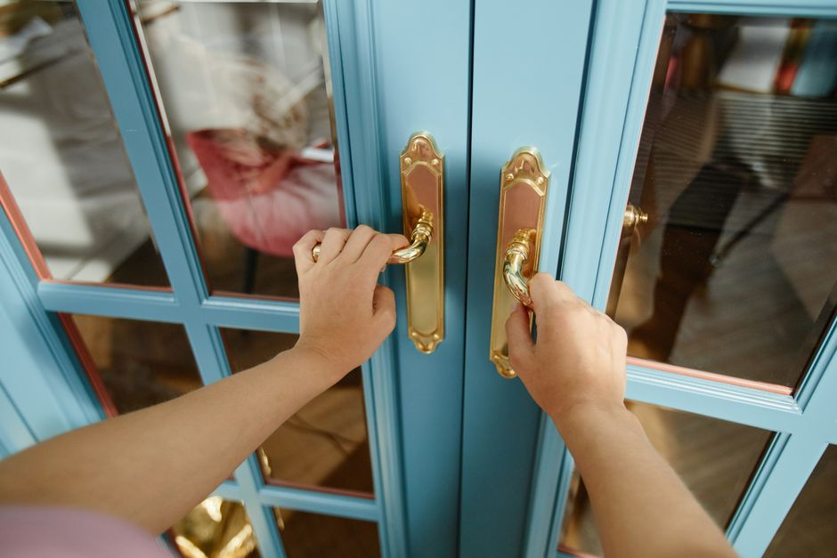

Masterful Entry and Interior Doors Installation
Elevate your home's aesthetic and security with Anayly. We specialize in premium fiberglass doors and professional door installation, delivering unparalleled craftsmanship for every threshold.


Precision at Every Threshold
At Anayly, we believe that every entryway sets the tone for your home. Acting as an independent promotional partner for Interior Door Replacement Company, we highlight years of specialized experience in crafting and fitting flawless entry doors and interior doors.
Master carpenters ensure a perfect fit, enhancing your home's energy efficiency, security, and architectural beauty. Whether you are upgrading a single room or undertaking a complete front door replacement, the mission is to deliver lasting quality and impeccable design.
From durable fiberglass doors to elegant wooden interior solutions, we connect homeowners with top-tier door installation experts who treat every project with absolute precision.
Our Core Services
Comprehensive door replacement and installation solutions tailored to your home's unique architecture.

Interior Doors
Transform your living spaces with elegant interior doors. The catalog features a wide selection of styles that improve room-to-room soundproofing, provide privacy, and beautifully complement your home's unique interior design. Professional fitting guarantees smooth operation and longevity.
Front Door Replacement
Make a striking first impression while enhancing your home's safety. Front door replacement services focus on structural integrity and weather resistance. Highly recommended fiberglass doors offer the rich look of wood without the maintenance, providing superior insulation and security.

Masterful Door Installation
Precision matters when it comes to door installation. The process is executed by master carpenters, ensuring perfect alignment, airtight seals, and flawless functionality. From custom sizing for older homes to modern hardware integration, every detail is handled with care.
Frequently Asked Questions
What materials are best for front door replacement?
Fiberglass doors are highly recommended for front door replacement. They provide the aesthetic appeal of natural wood while offering superior durability, weather resistance, and insulation. They do not warp or rot, making them an excellent long-term investment for any entryway.
How long does professional door installation take?
Typically, a single door installation takes a few hours. However, complete front door replacement involving frame modifications or custom sizing may take a full day. The focus is always on precision and ensuring an airtight, perfectly aligned fit rather than rushing the process.
Can I replace interior doors without changing the frame?
Yes, if the existing frame is square and in good structural condition, interior doors can often be replaced without removing the frame. Professional carpenters will measure the existing opening precisely to ensure the new slab fits flawlessly and operates smoothly.
Are your entry doors energy efficient?
Absolutely. The entry doors featured, particularly modern fiberglass doors, contain advanced polyurethane foam cores that provide excellent thermal insulation. Combined with professional door installation to eliminate drafts, they significantly improve your home's overall energy efficiency.
Do you accommodate custom sizing for older homes?
Yes, custom door installation is a specialty. Older homes frequently have non-standard door frames that have settled over time. Master carpenters expertly measure, trim, and adjust custom entry doors and interior doors to fit perfectly into unique architectural spaces.
Client Testimonials
"The front door replacement was handled with incredible professionalism. The new fiberglass doors completely transformed our home's facade and eliminated the drafts we've had for years."
— Sarah M., 2026
"We needed five interior doors replaced in our historic home. The carpenters measured everything perfectly. The door installation was flawless and the soundproofing difference is night and day."
— David L., 2026
"Finding a reliable entry doors installation company was tough until we found this team. They guided us to the perfect custom entry door and installed it with absolute precision."
— Michael R., 2026
Request a Consultation
Ready to upgrade your home with premium entry doors or new interior doors? Provide your details below, and a door installation specialist will reach out to discuss your front door replacement or interior upgrading project. We ensure high-quality materials and masterful craftsmanship for every home.